소리와 뜻을 봅니다
새 글자의 읽기와 뜻을 확인합니다. 흐린 안내 위에 쓰는 단계는 건너뛸 수 있습니다.
태블릿에서 가리고 쓰기
소리와 뜻을 본 뒤 정답을 가립니다.
한 글자를 직접 쓰고,
그 글자를 단어의 뜻과 잇습니다.
계정은 없습니다. 학습 기록은 이 기기에 남습니다.
a · 히라가나
제출 전에는 정답 글자가 보이지 않습니다.
이 그림은 안내이며 앱 화면 그대로는 아닙니다.
새 글자의 읽기와 뜻을 확인합니다. 흐린 안내 위에 쓰는 단계는 건너뛸 수 있습니다.
정답 없이 한 칸을 채웁니다. 손가락으로도 쓸 수 있습니다. 태블릿이나 패드에서 펜슬을 쓰는 것을 권하며, 설정에서 펜슬만 받도록 바꿀 수 있습니다.
쓴 글자를 단어 속 빈칸과 뜻 질문으로 잇습니다. 쓰기와 뜻 이해는 따로 기록합니다.
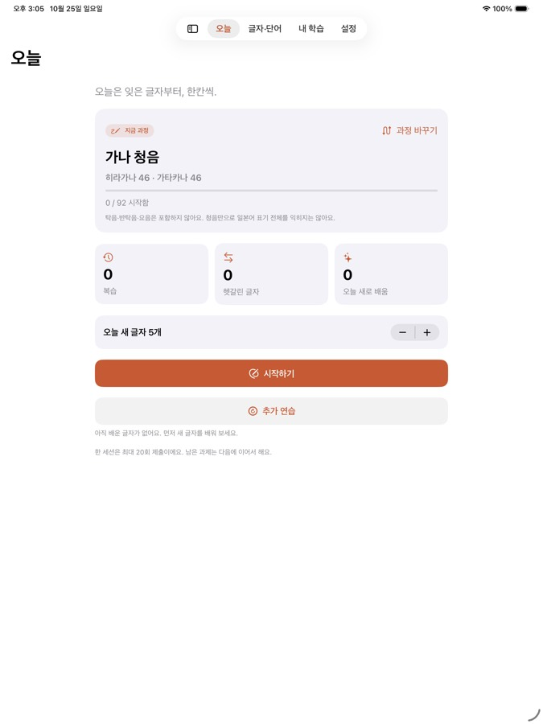
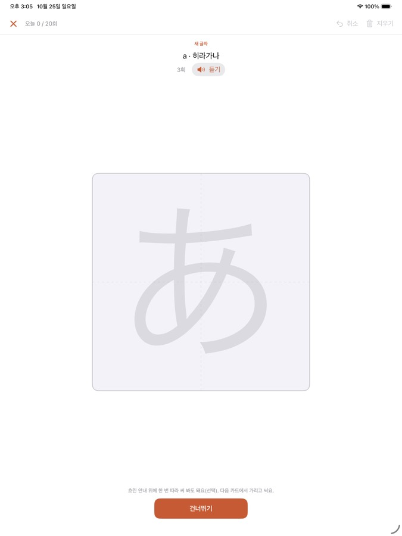
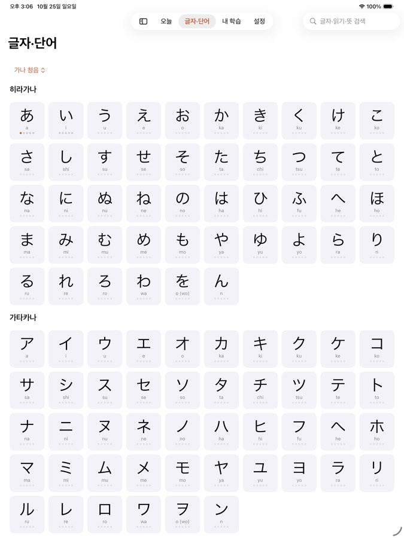
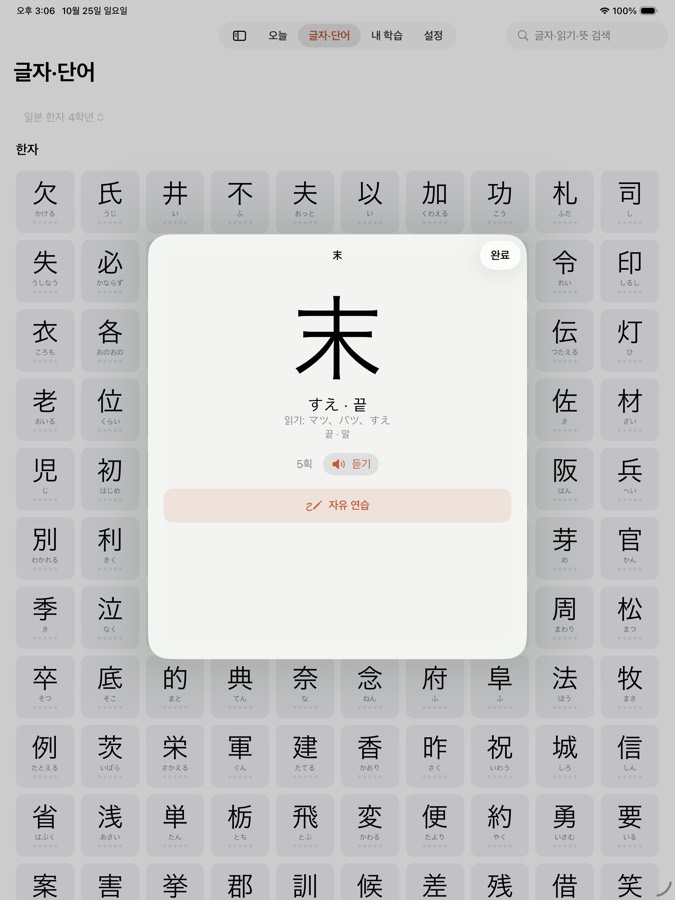
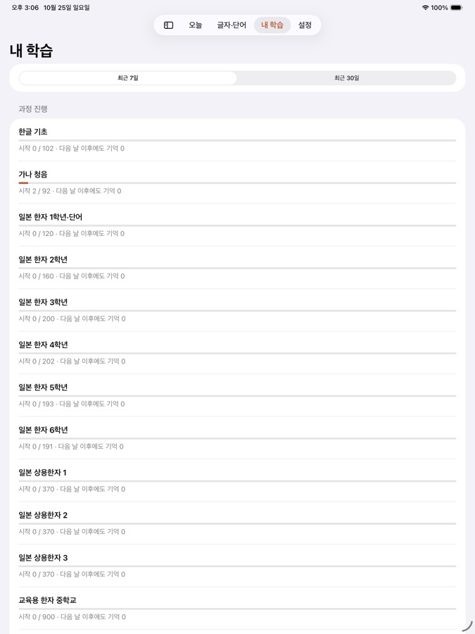
복습은 1일, 3일, 7일, 14일, 30일 간격입니다. 같은 날 여러 번 맞아도 그 간격이 한 번에 올라가지 않습니다.
손글씨는 기기 안에서 인식합니다. Android에서는 언어 모델을 처음 한 번 받을 수 있습니다. 확신이 없으면 판단을 보류하고 직접 확인합니다. 필기를 서버나 외부 AI로 보내지 않습니다.
설정에서 템플릿을 받아 엑셀, CSV, JSON으로 과정을 추가할 수 있습니다. 가져온 내용도 이 기기에 남습니다.
한글 기초, 가나 청음, 일본 한자 1학년부터 6학년과 상용한자, 한국 교육용 한자, 중국어 간체자 과정을 넣었습니다. 화면 언어는 한국어, 영어, 일본어이고 배우는 언어와 따로 고릅니다.
읽기, 뜻, 획 수, 단어, 설명은 한칸이 직접 쓴 초안입니다. 사전이나 문제집의 표를 옮기지 않았습니다. 글자 목록의 출처는 앱 설정의 데이터 출처에서 확인할 수 있습니다.
한칸은 글자를 외워 준다고 약속하지 않습니다. 읽을 때 알던 글자를 손으로 떠올리는 연습입니다. 필순 애니메이션이나 맞춤법 전체 교정을 하지 않습니다.
iOS 앱에는 광고가 없습니다. Android 앱에는 Google AdMob 광고가 있습니다. 배너는 목록 화면 아래에 두고, 전면 광고는 학습을 마친 뒤에 나옵니다. 쓰는 화면에는 광고를 두지 않습니다. 설정에서 광고를 보면 24시간 동안 배너와 전면 광고를 끌 수 있습니다. 분석 SDK와 계정 동기화는 없습니다. 앱을 지우거나 기기를 바꾸기 전에 학습 기록을 내보내지 않으면 복구하기 어려울 수 있습니다. 정보 처리 방식 보기
태블릿이나 패드에서 펜슬과 함께 쓰는 것을 권합니다. 스토어 등록 후 다운로드 링크를 안내합니다.
Cover and write on a tablet
See the sound and the meaning, then the answer is covered.
Write the character yourself,
and connect it to the meaning of a word.
No account. Your progress stays on this device.
a · hiragana
The answer is hidden until you submit.
This is an illustration, not an exact screen from the app.
Check the reading and meaning of a new letter. Tracing over a faint guide is optional.
Fill one box with no answer shown. You can write with a finger. A stylus on a tablet or pad is recommended, and Settings can limit input to the stylus.
The letter you wrote returns as a blank inside a word and as a meaning question. Writing and understanding meaning are recorded separately.
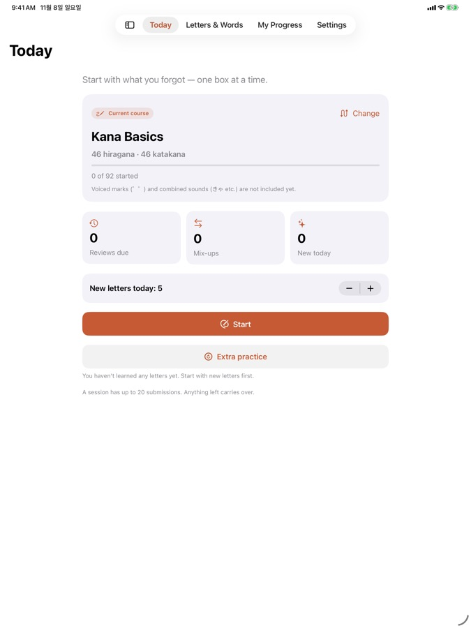
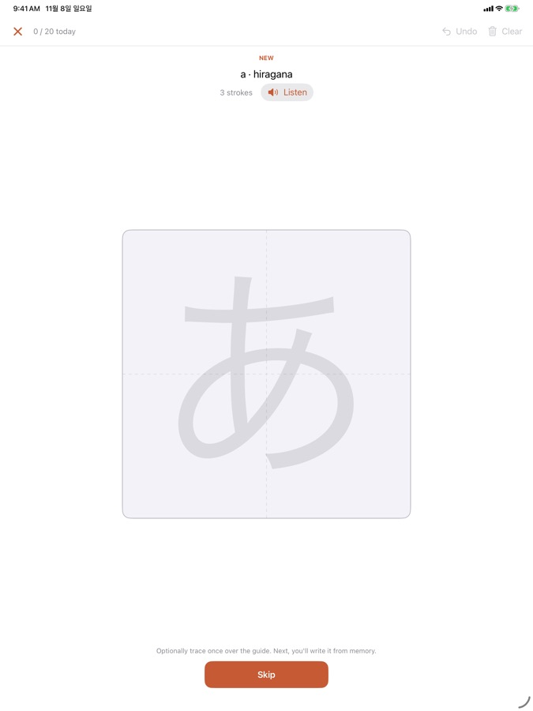
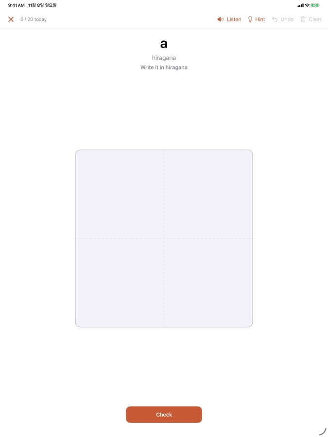
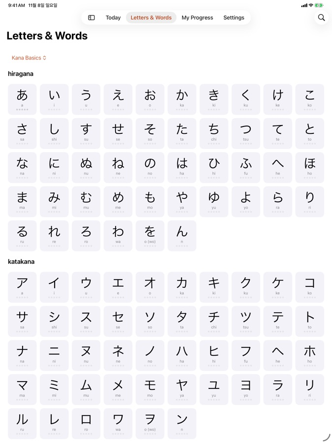
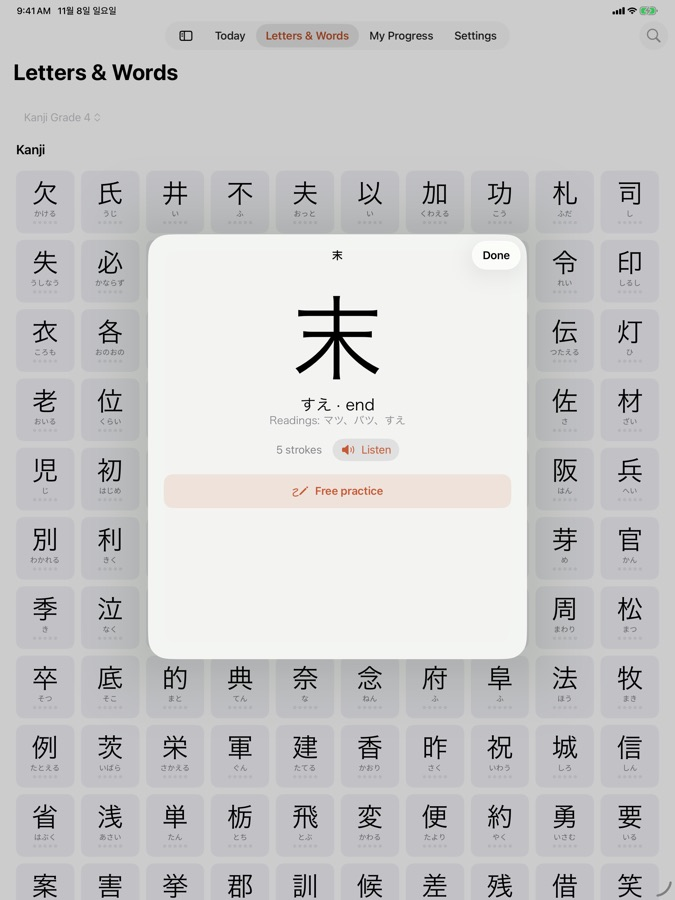
Reviews come back after 1, 3, 7, 14, and 30 days. Getting a letter right several times on the same day does not skip ahead.
Handwriting is recognized on the device. On Android, a language model may download once. If the app is unsure, it holds its verdict and you check it yourself. Handwriting is never sent to a server or an outside AI.
Get a template in Settings and add courses from Excel, CSV, or JSON. Imported material also stays on this device.
Hangul basics, basic kana, Japanese kanji for grades 1 to 6 and the Joyo kanji, Korean education hanja, and simplified Chinese. The interface is Korean, English, or Japanese, chosen separately from the language you study.
Readings, meanings, stroke counts, words, and notes are drafts written for Hankan. Nothing was copied from dictionary or workbook tables. The sources of the character lists are listed under Data sources in the app's Settings.
Hankan does not promise that you will memorize characters. It is practice for recalling by hand the letters you can already read. There is no stroke-order animation and no spelling check for a whole passage.
The iOS app has no ads. The Android app shows Google AdMob ads: a banner below list screens and an interstitial after a finished session. The writing screen has no ads. Watching an ad in Settings turns off banners and interstitials for 24 hours. There is no analytics SDK and no account sync. If you uninstall the app or change devices without exporting your progress, it may be hard to recover. How information is handled
A tablet or pad with a stylus is recommended. Download links will be added after the store listing goes live.
タブレットで隠して書く
音と意味を見たら、答えを隠します。
一字を自分で書いて、
その字を単語の意味につなげます。
アカウントはありません。学習記録はこの端末に残ります。
a・ひらがな
提出するまで答えの字は見えません。
この図は説明用で、アプリの画面そのものではありません。
新しい字の読みと意味を確かめます。薄いお手本の上になぞる段階は飛ばせます。
答えを見ずに一マスを埋めます。指でも書けます。タブレットやパッドではペンシルを勧めます。設定でペンシルだけを受け付けるようにできます。
書いた字を、単語の中の空欄と意味の質問につなげます。書くことと意味の理解は別々に記録します。
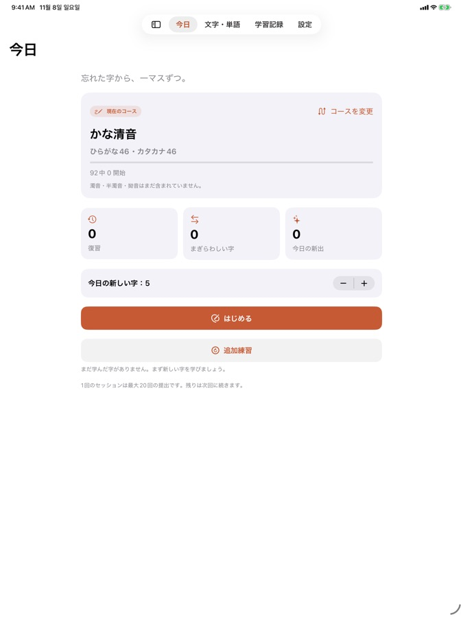
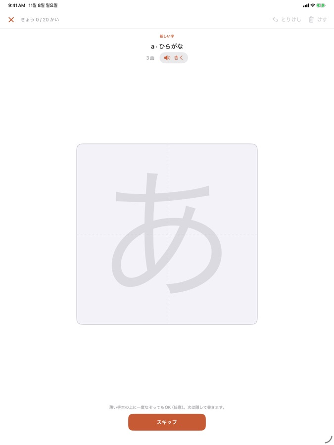
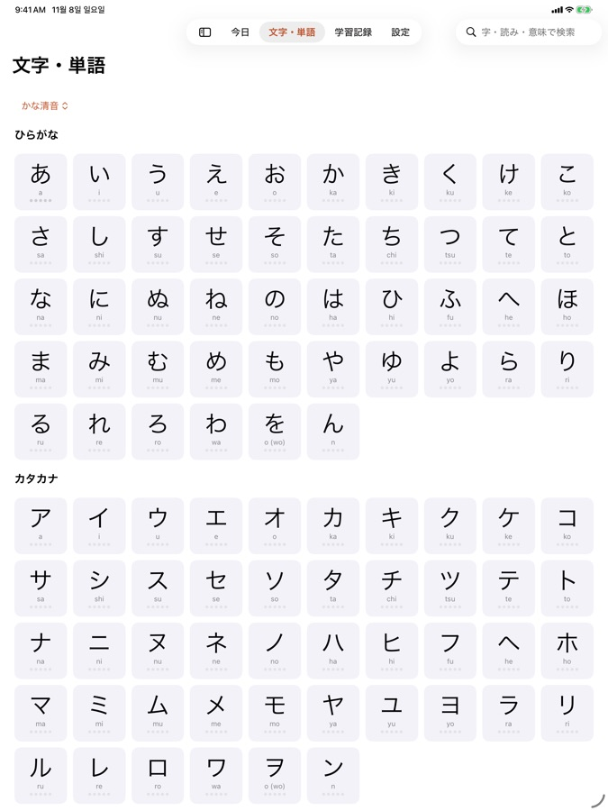
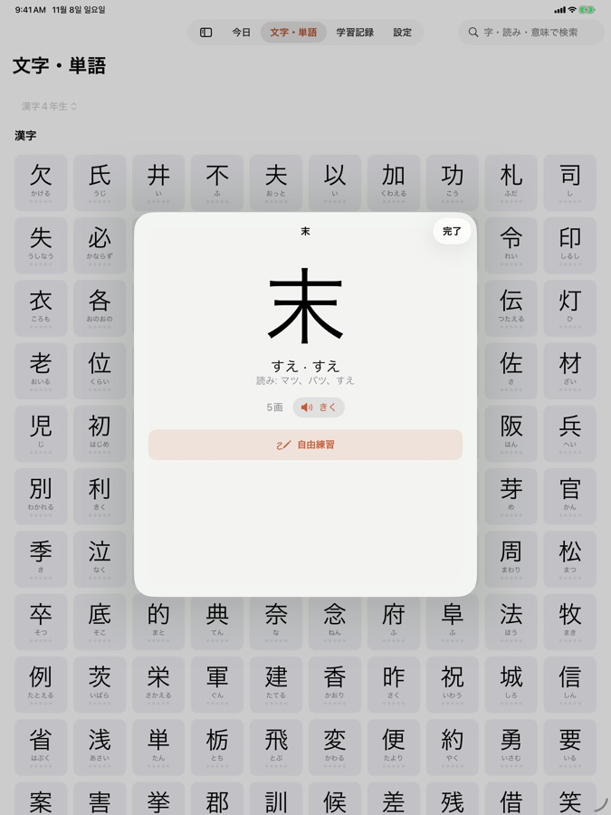
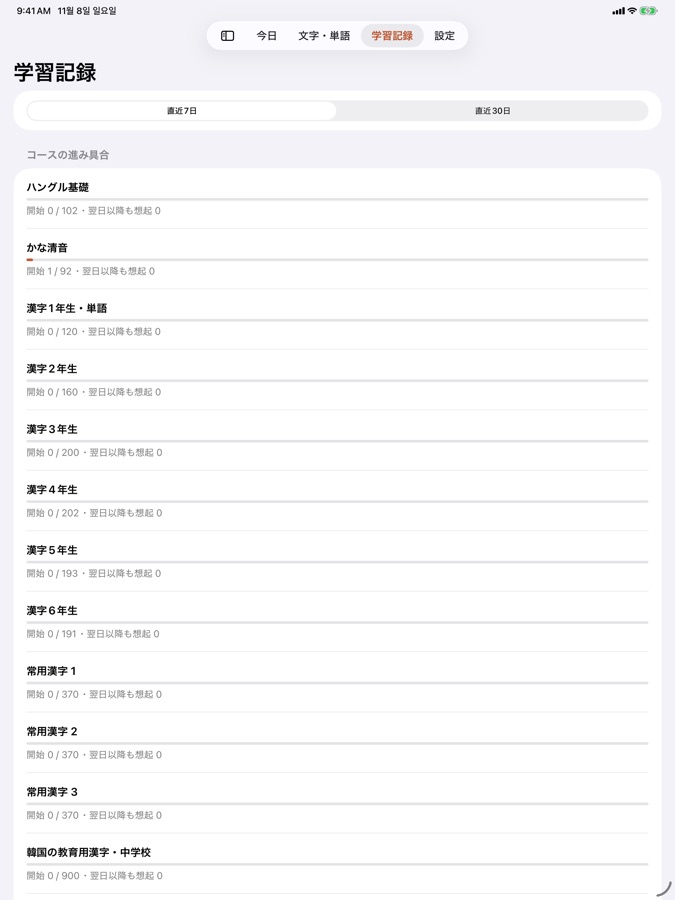
復習は1日、3日、7日、14日、30日の間隔です。同じ日に何度正解しても、間隔が一度に上がることはありません。
手書きは端末の中で認識します。Android では言語モデルを最初に一度ダウンロードする場合があります。確信がないときは判定を保留し、自分で確かめます。手書きをサーバーや外部の AI に送りません。
設定でテンプレートを保存し、Excel、CSV、JSON でコースを追加できます。読み込んだ内容もこの端末に残ります。
ハングルの基礎、かな（清音）、日本の漢字1年生から6年生と常用漢字、韓国の教育用漢字、中国語の簡体字のコースがあります。画面の言語は韓国語、英語、日本語で、学ぶ言語とは別に選べます。
読み、意味、画数、単語、説明は一マスが独自に書いた草案です。辞典や問題集の表を写していません。文字リストの出典は、アプリの設定の「データの出典」で確認できます。
一マスは、文字を覚えられると約束しません。読める字を手で思い出す練習です。筆順アニメーションや、文章全体の表記校正はしません。
iOS アプリには広告がありません。Android アプリには Google AdMob の広告があります。バナーは一覧画面の下に置き、全画面広告は学習を終えたあとに出ます。書いている画面には広告を置きません。設定で広告を見ると、24時間バナーと全画面広告を止められます。解析 SDK とアカウント同期はありません。アプリを消したり端末を替えたりする前に学習記録を書き出しておかないと、復元が難しい場合があります。 情報の取り扱いを見る
タブレットやパッドでペンシルと一緒に使うことを勧めます。ストア公開後にダウンロードリンクを載せます。
a · 平假名
提交前看不到答案。
此图仅作说明，并非应用的实际画面。
确认新字的读音和意思。在浅色范字上描写的步骤可以跳过。
不看答案，填满一个格子。可以用手指书写。建议在平板上使用触控笔，也可以在设置里改为只接受触控笔。
写过的字会作为单词中的空格和意思题再次出现。书写和理解意思分开记录。
目前没有中文界面。截图为英文界面下的简体字课程。
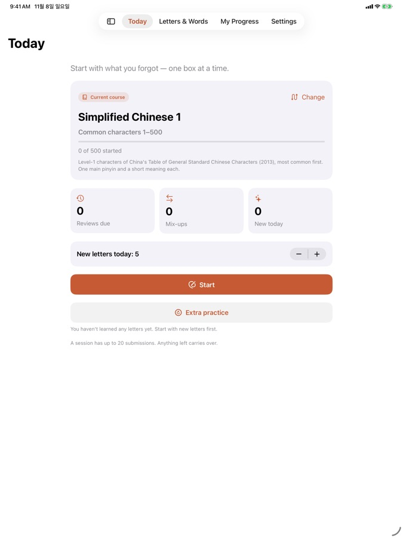
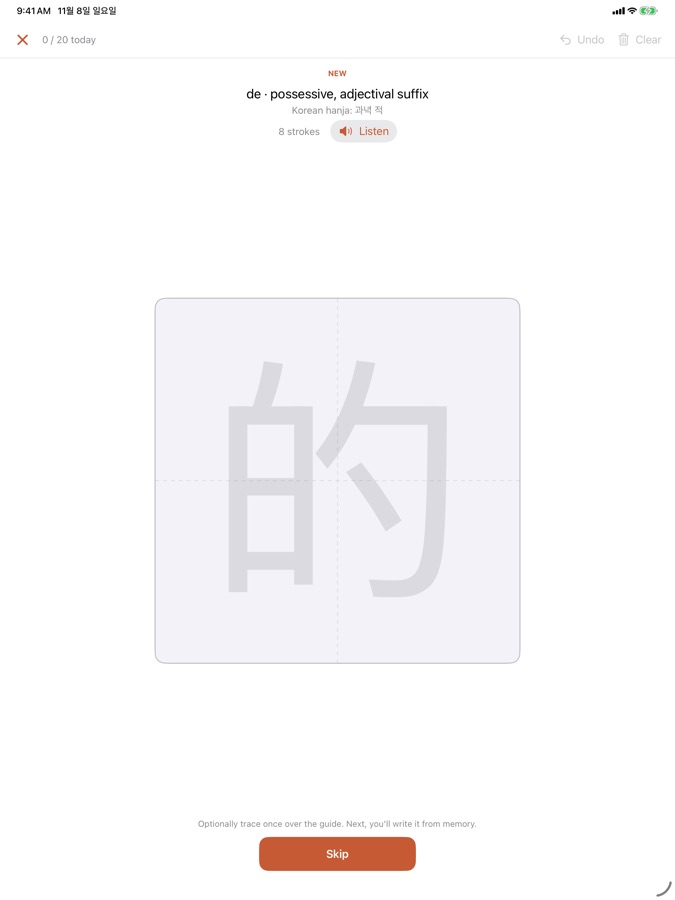
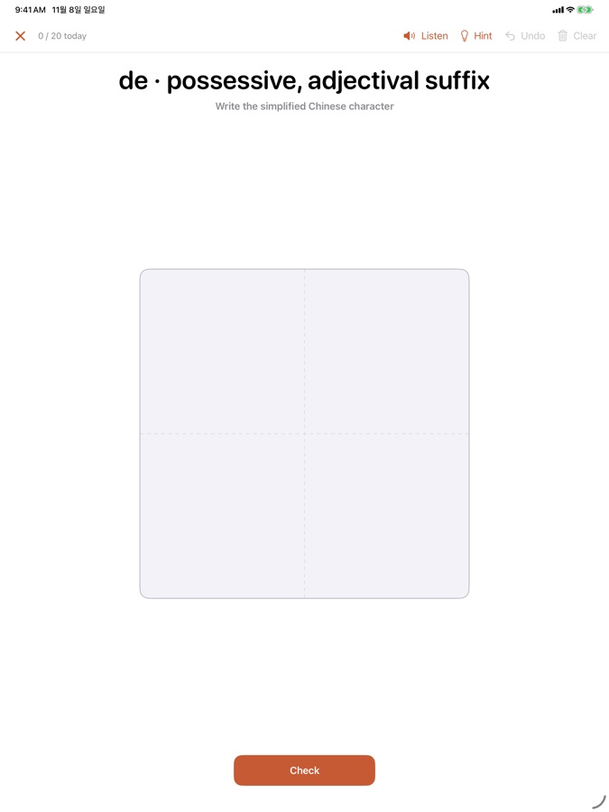
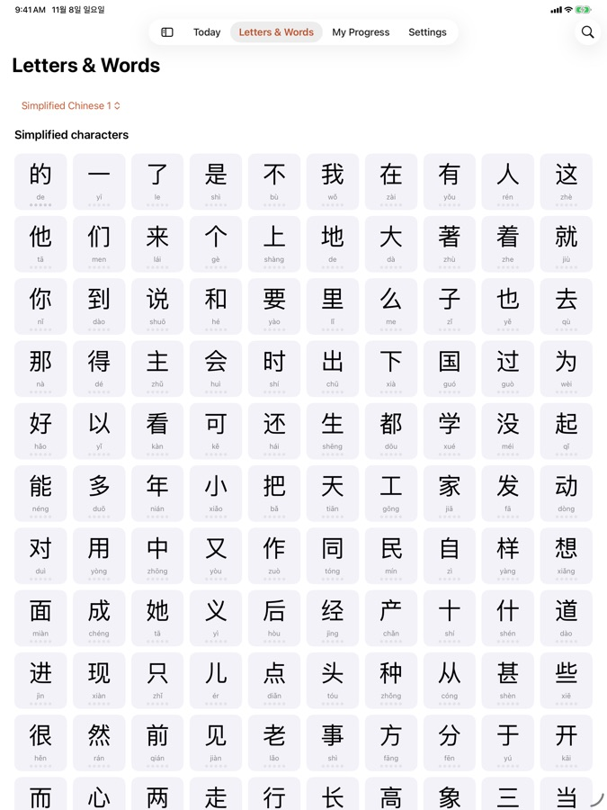
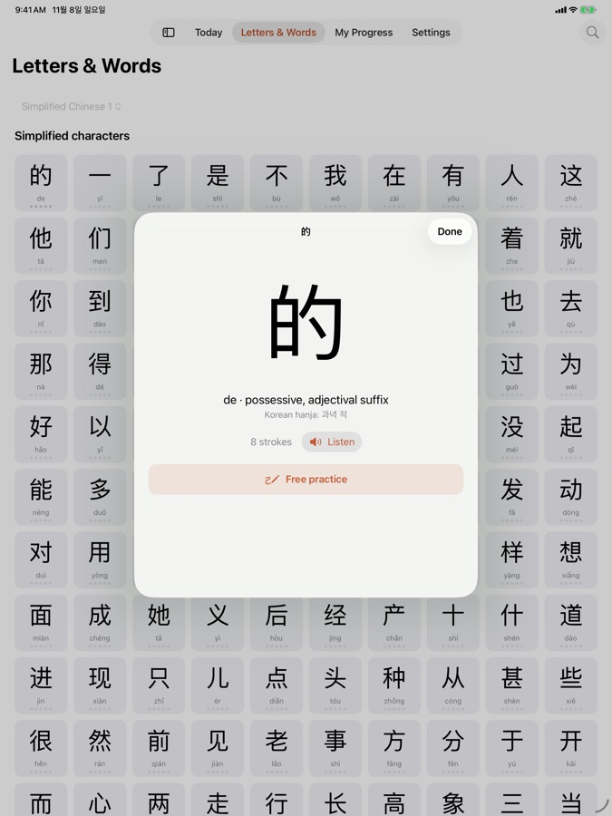
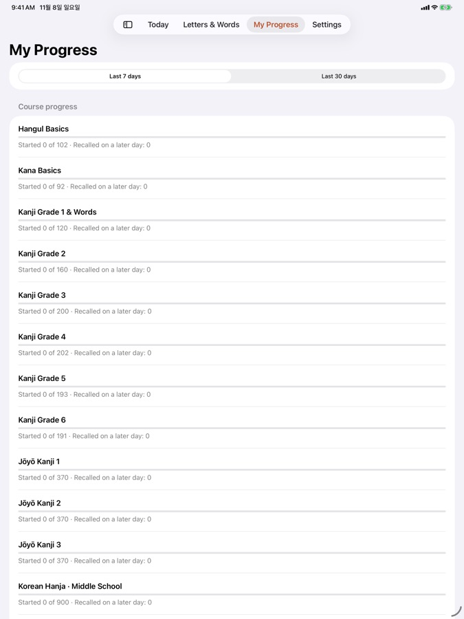
复习间隔为 1 天、3 天、7 天、14 天、30 天。同一天答对多次，间隔也不会一下子跳级。
手写在设备上识别。Android 上可能需要首次下载一次语言模型。不确定时会暂缓判断，由你自己确认。手写内容不会发送到服务器或外部 AI。
在设置中保存模板，用 Excel、CSV、JSON 添加课程。导入的内容也留在这台设备上。
包括韩文基础、日语假名（清音）、日本小学 1 至 6 年级汉字和常用汉字、韩国教育用汉字，以及中文简体字课程。界面语言为韩语、英语或日语，与所学语言分开选择。
读音、意思、笔画数、单词和说明是为 한칸 编写的草稿，没有照搬词典或练习册的表格。字表的来源可在应用设置的“数据来源”中查看。
한칸 不保证你能记住汉字。这是把看得懂的字用手回想出来的练习。没有笔顺动画，也不批改整段文字的拼写。
iOS 应用没有广告。Android 应用含有 Google AdMob 广告：横幅放在列表页面下方，插页广告在学习结束后出现。书写页面不放广告。在设置中观看广告，可以在 24 小时内关闭横幅和插页广告。没有分析 SDK，也没有账号同步。如果在卸载应用或更换设备前没有导出学习记录，可能难以恢复。 查看信息处理方式
建议在平板上配合触控笔使用。上架后会在这里提供下载链接。